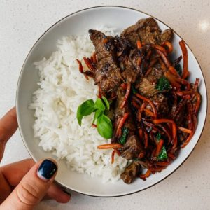

Steak and Rice Bowl

An easy and delicious Asian style steak bowl
A refined meal with an zesty taste for those that enjoy something a bit spicier
Ingredients
- 1/2 lb organic, grass fed flank steak
- 3 tbsp coconut aminos (soy sauce if you’re not Whole30)
- 1 tbsp sesame oil
- 1 tsp sambal
- 2 cloves crushed garlic
- 1 tsp fresh grated ginger
- 1 tbsp honey (omit honey for Whole30)
- veggies of choice (I did shredded carrots)
- 1/4 cup fresh basil
- rice of choice
Recipe Instructions
- Start by marinading organic, grass fed flank steak cut into bite size pieces with coconut aminos, sesame oil, sambal, garlic, fresh grated ginger, and honey. Refrigerate for 30 minutes to an hour.
- Heat sesame oil in a medium skillet over medium heat. Make sure the pan is super hot then add your steak and veggies of choice- I did shredded carrots
- The steak should cook with about 3 minutes on each side. Remove from heat and stir in fresh basil. Serve with your choice of rice!